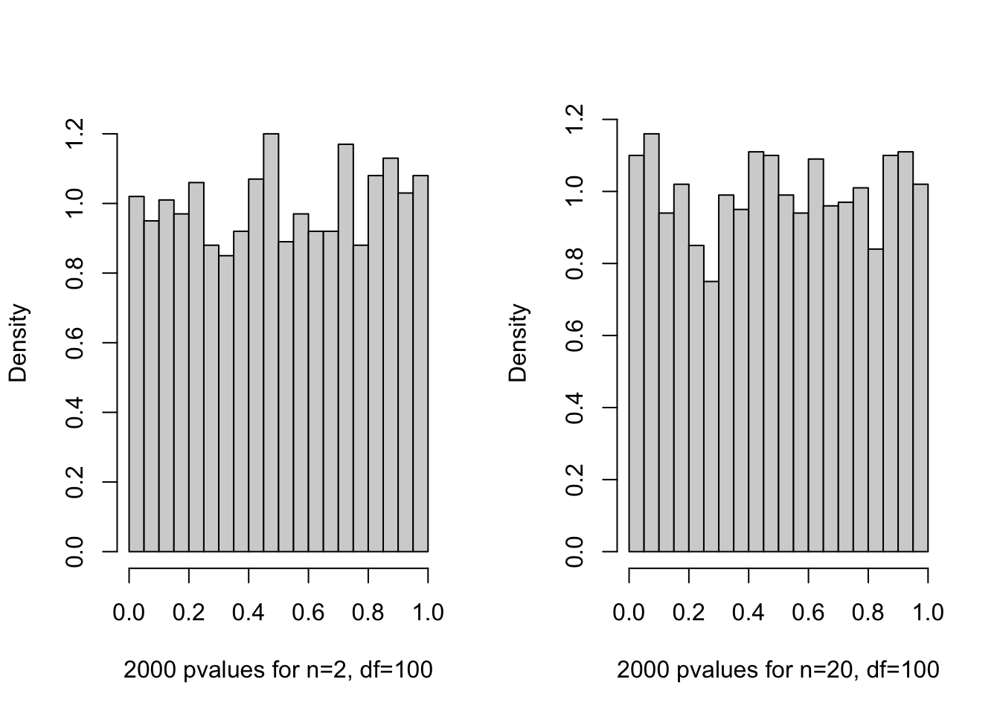
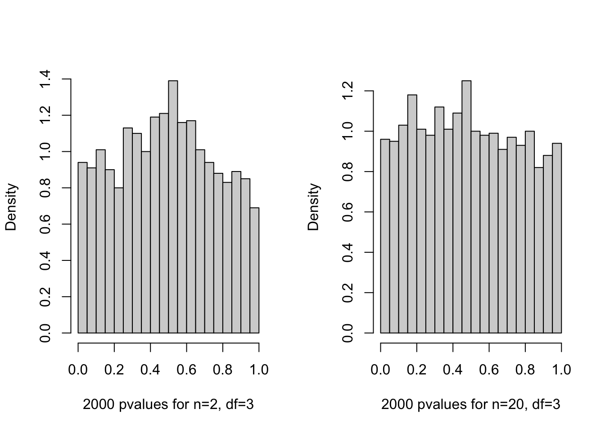
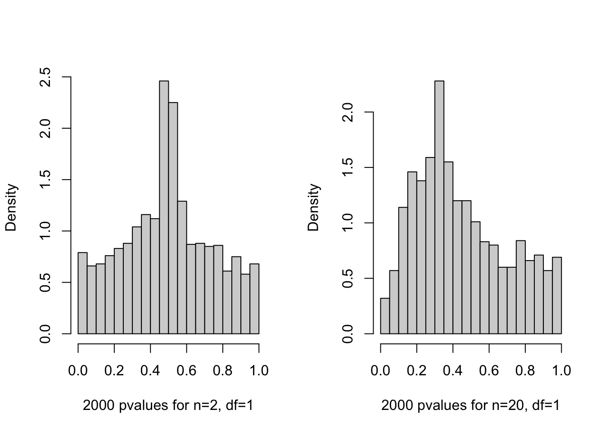
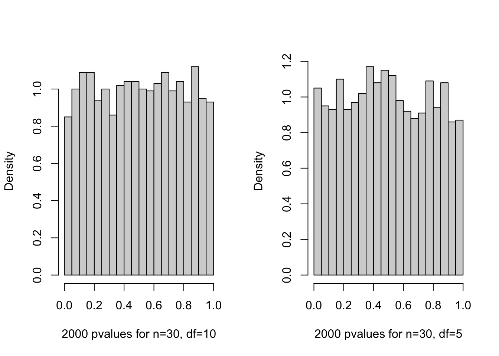
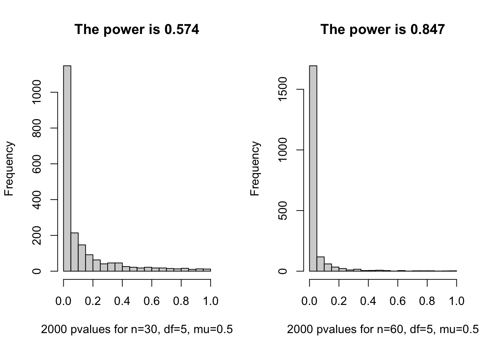
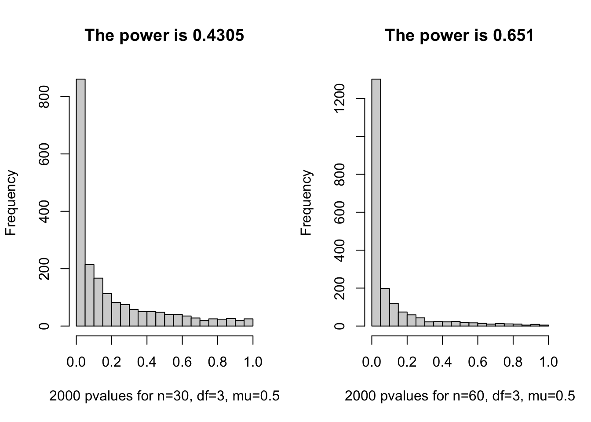

When estimating a binomial proportion \(p\) from \(n\) independent trials, the standard maximum likelihood estimator is the sample mean, \(\hat{p}_1 = \bar{X}\). However, this estimator can have high variance for small sample sizes, particularly when the true \(p\) is close to 0 or 1.
An alternative is a smoothed estimator (often called an “add-one-in” or Laplace estimator), defined as \(\hat{p}_2 = \frac{\sum X_i + 1}{n + 2}\). This estimator introduces a slight bias but aims to reduce overall variance.
To compare them, we use Monte Carlo simulation to estimate their Mean Squared Error (MSE) across a grid of true \(p\) values ranging from 0 to 1. The MSE is calculated as \(E[(\hat{p} - p)^2]\). We also compute the standard error of our Monte Carlo estimates to plot 95% confidence bands, allowing us to see exactly where the bias-variance tradeoff makes \(\hat{p}_2\) a superior choice for small sample sizes \(n\).
The standard Student’s t-test relies on the assumption that the underlying data is normally distributed. A critical statistical question is robustness: what happens to our false positive rate (Type I error) when the data actually comes from a heavy-tailed distribution?
If a statistical test is valid under the null hypothesis \(H_0\), its p-values should follow a standard Uniform distribution. We will simulate data from a t-distribution with varying degrees of freedom (where lower df means heavier tails, and df=1 is the Cauchy distribution). We then evaluate whether the resulting p-values remain uniform.
Code
# SIMULATE T TESTS ON DATA FROM A T DISTRIBUTION. Simulates k data# sets, each consisting of n data points that are drawn independently# from the t distribution with df degrees of freedom. For each data# set, the p-value for a two-sided t test of the null hypothesis that# the mean is mu (default 0) is computed. The value returned by this# function is the vector of these k p-values.t.test.sim <-function (N, n, df, mu.true =0, mu=0){ pvalues <-numeric(N)for (i in1:N) { x <-rt (n, df) + mu.true pvalues[i] <-t.test.pvalue(x,mu) } pvalues}# FIND THE P-VALUE FOR A TWO-SIDED T TEST. The data is given by the first# argument, x, which must be a numeric vector. The mean under the null # hypothesis is given by the second argument, mu, which defaults to zero.## Note: This function is just for illustrative purposes. The p-value# can be obtained using the built-in t.test function with the expression:# # t.test(x,mu=mu)$p.valuet.test.pvalue <-function (x, mu=0){ if (!is.numeric(x) ||!is.numeric(mu) ||length(mu)!=1) { stop("Invalid argument") } n <-length(x)if (n<2) { stop("Can't do a t test with less than two data points") } t <- (mean(x)-mu) /sqrt(var(x)/n)2*pt (-abs(t), n-1)}
4.2.1 Distribution of p-value of t.test under \(H_0\)
We expect these histograms to be completely flat (uniform). A non-flat distribution indicates the t-test is either overly conservative or excessively liberal under these specific conditions.
Code
N <-2000bins <-20
4.2.2 Tests with 100 degrees of freedom, with 2 and 20 data points.
With 100 degrees of freedom, the t-distribution is virtually indistinguishable from a Normal distribution. As expected, the p-values form a uniform flat line.
Code
par (mfrow =c(1,2))hist (t.test.sim(N,2,100), nclass=bins, prob=T, main="", xlab=paste(N,"pvalues for n=2, df=100"))hist (t.test.sim(N,20,100), nclass=bins, prob=T, main="", xlab=paste(N,"pvalues for n=20, df=100"))

4.2.3 Tests with 3 degrees of freedom, with 2 and 20 data points.
With 3 degrees of freedom, the data has noticeably heavier tails. We begin to see the p-value distribution warp, meaning the nominal Type I error rate is no longer perfectly calibrated.
Code
par (mfrow =c(1,2))hist (t.test.sim(N,2,3), nclass=bins, prob=T, main="", xlab=paste(N,"pvalues for n=2, df=3"))hist (t.test.sim(N,20,3), nclass=bins, prob=T, main="", xlab=paste(N,"pvalues for n=20, df=3"))

4.2.4 Tests with 1 degree of freedom, with 2 and 20 data points.
With 1 degree of freedom (the Cauchy distribution), the mean and variance are theoretically undefined. Extreme outliers are common, causing the t-test to behave erratically. The p-values cluster heavily at 1.0, rendering the test highly conservative and practically invalid.
Code
par (mfrow =c(1,2))hist (t.test.sim(N,2,1), nclass=bins, prob=T, main="", xlab=paste(N,"pvalues for n=2, df=1"))hist (t.test.sim(N,20,1), nclass=bins, prob=T, main="", xlab=paste(N,"pvalues for n=20, df=1"))

4.2.5 Tests with 10 and 5 degrees of freedom, with 30 data points.
As sample size increases to \(n=30\), the Central Limit Theorem begins to compensate for the heavy tails of the df=5 and df=10 distributions, pulling the p-value distributions back toward uniformity.
Code
par (mfrow =c(1,2))hist (t.test.sim(N,30,10), nclass=bins, prob=T, main="",xlab=paste(N,"pvalues for n=30, df=10"))hist (t.test.sim(N,30,5), nclass=bins, prob=T, main="", xlab=paste(N,"pvalues for n=30, df=5"))

4.3 Find the power of t.test
Statistical power is the probability of correctly rejecting a false null hypothesis. Here, we simulate data with a true mean of \(\mu = 0.5\), while testing against \(H_0: \mu = 0\). The power is the proportion of simulated p-values that fall below the \(\alpha = 0.05\) significance threshold.
4.3.1 Find the power of t.test for df = 5
Code
pvaues_H1_30 <-t.test.sim(N,30,5, mu.true =0.5, mu =0 )pvaues_H1_60 <-t.test.sim(N,60,5, mu.true =0.5, mu =0 )par (mfrow =c(1,2))hist(pvaues_H1_30, nclass =20, main =paste ("The power is", mean (pvaues_H1_30 <0.05)), xlab=paste(N,"pvalues for n=30, df=5, mu=0.5"))hist(pvaues_H1_60, nclass =20, main =paste ("The power is", mean (pvaues_H1_60 <0.05)), xlab=paste(N,"pvalues for n=60, df=5, mu=0.5"))

4.3.2 Find the power of t.test for df = 3
Code
pvaues_H1_30 <-t.test.sim(N,30,3, mu.true =0.5, mu =0 )pvaues_H1_60 <-t.test.sim(N,60,3, mu.true =0.5, mu =0 )par (mfrow =c(1,2))hist(pvaues_H1_30, nclass =20, main =paste ("The power is", mean (pvaues_H1_30 <0.05)), xlab=paste(N,"pvalues for n=30, df=3, mu=0.5"))hist(pvaues_H1_60, nclass =20, main =paste ("The power is", mean (pvaues_H1_60 <0.05)),xlab=paste(N,"pvalues for n=60, df=3, mu=0.5"))

5 A permutation test for correlation coefficient
When analytical assumptions for a test are doubtful, a permutation test offers a non-parametric alternative. To test if variables \(X\) and \(Y\) are correlated, we establish a null hypothesis that they are completely independent.
If they are truly independent, randomly shuffling the values of \(Y\) relative to \(X\) shouldn’t drastically change the correlation coefficient. By shuffling \(Y\) many times, we generate an empirical null distribution for the absolute correlation \(|r|\). The exact p-value is simply the proportion of permuted datasets that produced a correlation as extreme, or more extreme, than the actual observed data.
Code
# COMPUTE THE P-VALUE FOR A PERMUTATION TEST OF CORRELATION. Tests the null# hypothesis that the the vectors x and y are independent, versus the # alternative that they are correlated (either positively or negatively).# The vectors x and y are given as the first and second arguments; they# must be of equal length.#perm.cor.test <-function (x, y, no.perm=100){ real.abs.cor <-abs(cor(x,y)) permuted.abs.cor <-rep (0, no.perm)for (i in1:no.perm) { permuted.abs.cor[i] <-abs(cor(x,sample(y))) }mean (permuted.abs.cor > real.abs.cor)}# TEST ON NORMALLY-DISTRIBUTED DATA, COMPARED TO TEST BASED ON NORMAL DIST.test.perm.norm <-function(no.sim,no.perm){ pvalue <-rep(0,no.sim)for(i in1:no.sim) { x <-rnorm(20) y <-rnorm(20) pvalue[i] <-perm.cor.test(x,y,no.perm) } pvalue}pv <-test.perm.norm(2000,100)par (mfrow =c(1,1))hist(pv,20, xlab="2000 pvalues from permuation test",main="")
5.1 A power regression test
Often, researchers will search for a mathematical transformation that makes their data fit a model better. In this scenario, we find the power \(p\) (e.g., \(X^{0.5}, X^2\)) that maximizes the correlation between \(X^p\) and \(Y\).
If we report the standard linear regression p-value from this “optimized” model, the p-value will be artificially small. This is a form of optimization bias (or p-hacking). To generate a mathematically valid p-value, we must use a permutation test that repeats the entire search process (finding the best power) on the shuffled null datasets.
5.1.1 R Functions for REGRESSION USING BEST POWER TRANSFORMATION
Code
# Takes as arguments a# vector of predictor values and a vector of response values (of equal# length). The predictor values must be non-negative. Finds the# power transformation for the predictors that produces the highest# correlation (in absolute value) with the response, chosing the power# from the powers argument (which defaults to seq(0.1,2.0,by=0.1).# Returns the pvaluepvalue.lm.pow <-function (x, y, powers=seq(0.1,4.0,by=0.1)){if (!is.vector(x,"numeric") ||!is.vector(y,"numeric") ||length(x)!=length(y)) { stop("Arguments should be numeric vectors of equal length") }if (any(x<0)) { stop("Predictors must be non-negative") } n <-length(x)# Find the power that produces the highest correlation with the response. best.r <-0for (p in powers) { r <-cor(x^p,y)if (abs(r)>=abs(best.r)) { power <- p best.r <- r } }# Return the best power and the linear model using that power. xp <- x^power#return naive pvaluecoef(summary(lm(y~xp)))[2,4]}# TEST VALIDITY OF THE NAIVE P-VALUES. Simulates the results of# naively interpreting pvalues for the regression on the best# power of the predictor variable (from pvalue.lm.pow) as a real pvalue.# The arguments of this function are the vector of predictor variables# to use (x), the number of datasets to simulate (N), and possible# further arguments that are passed on to pvalue.lm.pow. N datasets of n# cases are generated in which x is as specified and the corresponding# y values are generated independently from the standard normal# distribution (without reference to x). The result is the vector of# N p-values obtained from the models that pvalue.lm.pow chooses for these# datasets. Since the null hypothesis of no relationship is true,# these p-values should be uniformly distributed between 0 and 1, if# they are valid.test.lm.power <-function (x, N, ...){ n <-length(x)# Simulate N datasets and record the naive p-value found for each. pvalues <-rep(0,N)for (k in1:N) { y <-rnorm(n) pvalues[k] <-pvalue.lm.pow(x,y,...) }# Return the vector of N p-values that were obtained. pvalues}# FIND PERMUTATION PVALUE FOR REGRESSION USING BEST POWER TRANSFORM.# Takes as arguments the vectors of predictors (x) and responses (y),# as for pvalue.lm.pow, the number of permutations to use in finding the# p-value (default is 100), and possible further arguments that are# passed on to pvalue.lm.pow. Returns the p-value from the permutation# test, which is (roughly) the fraction of times that reg.pow applied# to a randomly shuffled data sets gives a smaller p-value than reg.pow# gives when applied to the actual dataset. In detail, the pvalue is# count/perms, with count being the number of smaller p-values# obtained from permuted datasets. If the null hypothesis of no# relationship is true, these p-values will be uniformly distributed# over the possible values (ie, roughly uniform between 0 and 1).pvalue.perm.lm.pow <-function (x, y, no.perm=100, ...){# Find the naive p-value using pvalue.lm.pow for the actual data. actual <-pvalue.lm.pow(x,y,...)# Count how many times pvalue.lm.pow applied to a random permutation finds # a model with as small a naive p-value as for the actual data. permuted_pvalue <-rep(0, no.perm)for (k in1:no.perm) { permuted_pvalue[k] <-pvalue.lm.pow(x,sample(y),...) }mean (permuted_pvalue < actual)}#TEST VALIDITY OF THE PERMUATION PVALUES. The method is the same as for #test.lm.power. When power.sim is not 0, it can be used to calculate the power#of the testtest.perm.power <-function (x, power.sim, N=100, resid.std.dev=1, ...){ n <-length(x) pvalues <-rep(0,N)for (k in1:N) { y <- x^power.sim +rnorm(n,0,resid.std.dev) pvalues[k] <-pvalue.perm.lm.pow(x,y,...) } pvalues}
5.1.2 Checking the uniformity of p-values under \(H_0\)
In the left plot, we examine the naive p-values under a true null hypothesis. The distribution is heavily skewed left, causing a massive inflation in the false-positive rate. In the right plot, the permutation test perfectly corrects this optimism bias, returning a uniform distribution of valid p-values.
Code
par(mfrow=c(1,2),mar=c(4,4,3,1))x <-exp(rnorm(20))naive.pv <-test.lm.power(x, 1000)perm.pv <-test.perm.power(x,0,1000, no.perm=99)hist(naive.pv,nclass=20,xlab="1000 naive pvalues from power regression",main=paste("H0 is true, naive test, rejection rate=", mean (naive.pv<0.05)))hist(perm.pv,nclass=20,xlab="1000 permuation pvalues from power regression",main=paste("H0 is true, Permutation test, rejection rate=", mean (perm.pv<0.05)))
5.1.3 The statistical power of the permuation test
Now that we have confirmed our permutation test maintains a valid 5% Type I error rate under the null, we evaluate its statistical power. Here, we inject a true relationship into the simulated data: \(Y = X^{1.5} + \epsilon\) and \(Y = X^{0.5} + \epsilon\). The resulting rejection rates demonstrate how effectively the permutation test detects these nonlinear true signals.
Code
perm.pv.alt1 <-test.perm.power(x,1.5,1000,no.perm=99)#p-value when the true power in function is 0.5perm.pv.alt2 <-test.perm.power(x,0.5,1000,no.perm=99)par(mfrow=c(1,2),mar=c(4,4,3,1))hist(perm.pv.alt1,nclass=20,xlab="1000 permuation pvalues from power regression",main=paste0("H1: y = x^1.5 + e, permutation test, rej. rate=", mean (perm.pv.alt1<0.05)))hist(perm.pv.alt2,nclass=20,xlab="1000 permuation pvalues from power regression",main=paste0("H1: y = x^0.5 + e, permutation test, rej. rate=", mean (perm.pv.alt2<0.05)))